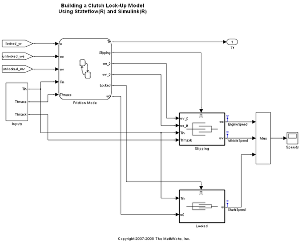
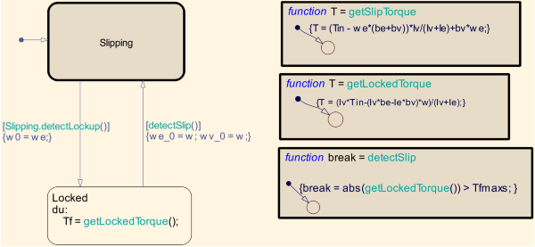
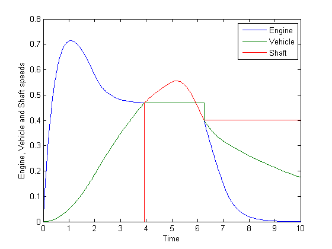

Modeling a Clutch
This model implements the Simulink® clutch demo using a combination of Simulink enabled subsystems and a Stateflow® chart. Note that you can find a detailed explanation of the physical system, including figures and equations, in the demo for the Simulink clutch model with enabled subsystems.
Contents
Recommended Workflow
This model demonstrates the recommended way of modeling hybrid systems using Simulink and Stateflow when the continuous dynamics are complex (necessitating the use of Simulink or physical modeling tools) and there are mode changes that are coupled with the dynamics.
Modeling a hybrid system involves addressing the following concerns:
Continuous Dynamics Hybrid systems have multiple modes of operation where each mode of operation is defined by some continuous dynamics. When the continuous dynamics are complex, it is a good idea to use Simulink enabled subsystems to model them. In this case, we have the "Locked" and "Slipping" enabled subsystems that represent the two modes of operation of a clutch. Note that the inputs to each of the enabled subsystems represent both the inputs driving the dynamics, as well as the initial conditions for the differential equations.
Mode Logic This refers to the conditions under which we switch from one mode of operation to another. In this example, the mode logic is described in a Stateflow chart.
Note the following salient points about this chart:
- The Stateflow chart has two states "Locked" and "Slipping" that represent the two modes of operation of the clutch. Each of the states has the "Output state activity" property enabled. This causes the chart to have additional outputs called "Slipping" and "Locked" that control the activity of the Simulink subsystems of the same name.
- In general, the transition conditions will depend on continuous time signals that are computed in the enabled subsystems. For example, in this demo, the condition for switching from the "Slipping" state to the "Locked" state depends on the current values of the integrators in the "Slipping" state. In order to accurately model such situations, we need to connect the state outports of the integrators in the enabled subsystems to the inputs of the Stateflow chart that control the mode logic. From/Goto blocks are used because Simulink disallows connecting state outports to outputs of conditionally executed subsystems.
State Handoff When switching from one mode of operation to another, the integrators in the newly activated subsystem need to be initialized properly in order to get smooth output. This is done by using the Stateflow outputs to drive the initial condition ports of the Simulink enabled subsystems. For example, the Stateflow chart drives the Inport called we_0 of the "Slipping" subsystem, which is itself connected to the IC port of the integrator block "Slipping/Engine Integrator". The initial conditions are set in the Stateflow chart as part of the transition action when switching states.
Simulation Results
When the system is simulated, the engine and vehicle velocities are as shown in the following graph. The plates lock at about 4 seconds and begin slipping again at about 6.25 seconds. Note that you can only use the Engine and Vehicle speeds when the system is in the Slipping state. These values are invalid when the system is in the Locked state.
